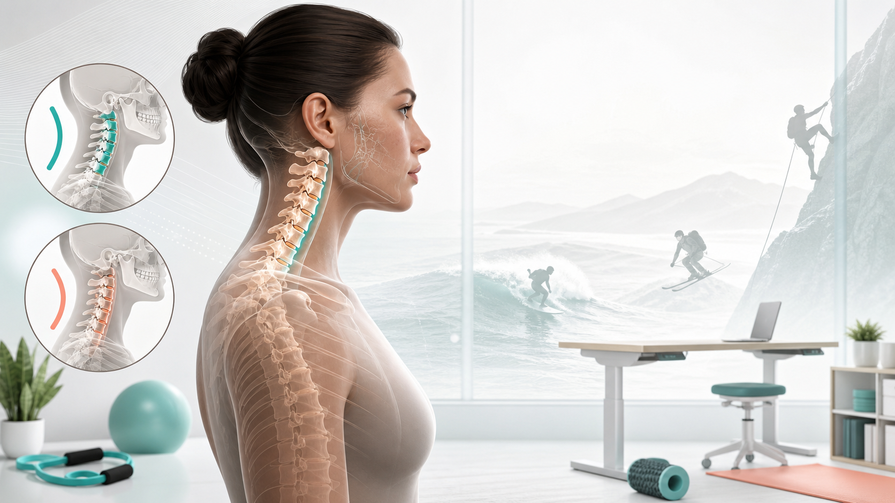

Evidence-aware neck curve education
Cervical kyphosis, explained without panic.
A multilingual guide for understanding reversed or flattened cervical curve findings, conservative rehab, nerve mobility, upper-back strength, and smarter sport participation.
The core idea
The curve matters, but symptoms matter more.
"Cervical kyphosis" can describe a reversed curve, while "loss of cervical lordosis" often describes a flattened curve. An image finding alone does not prove the pain source; function, nerve signs, sleep, work exposure, and sport load all matter.
Symptom map
Hand numbness is a clue, not a diagnosis.
Cervical kyphosis or straightening becomes clinically important when it appears with nerve-root or spinal-cord symptoms: radiating arm pain, tingling, weakness, hand clumsiness, or walking changes.
Finger pattern guide
Which nerve pattern fits the fingers?
Patterns overlap, and double-crush can happen. Use this as a discussion guide for clinical exam, imaging, and EMG/NCS when appropriate.
| Source | Common numb area | Extra clues |
|---|
Conservative care
A practical rehab map for non-emergency cases.
The safest framing is graded exposure: calm symptoms, restore tolerable motion, build shoulder-blade and thoracic strength, then return to sport with load rules.
Video library
Curated YouTube rehab references.
These videos are references to discuss with a clinician, especially if symptoms travel into the arm or hand. Stop if symptoms worsen, spread, or linger after a session.
Sport relationship
Surfing, skiing, and climbing change neck loading.
Sports rarely fit a simple "good" or "bad" label. The key is the position, exposure time, impact risk, and how your symptoms respond over the next 24 hours.
References
Source base for this prototype.
The site should keep a visible review date, cite clinician-grade sources, and avoid claiming that exercise can guarantee curve restoration.